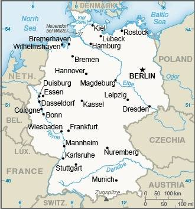
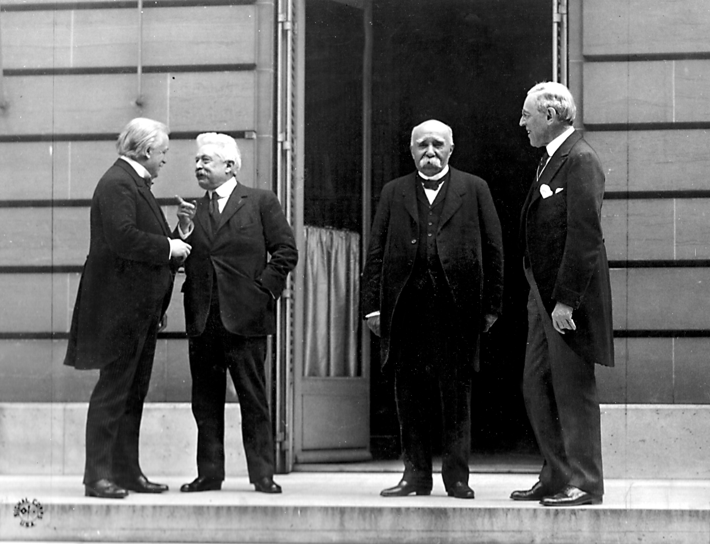
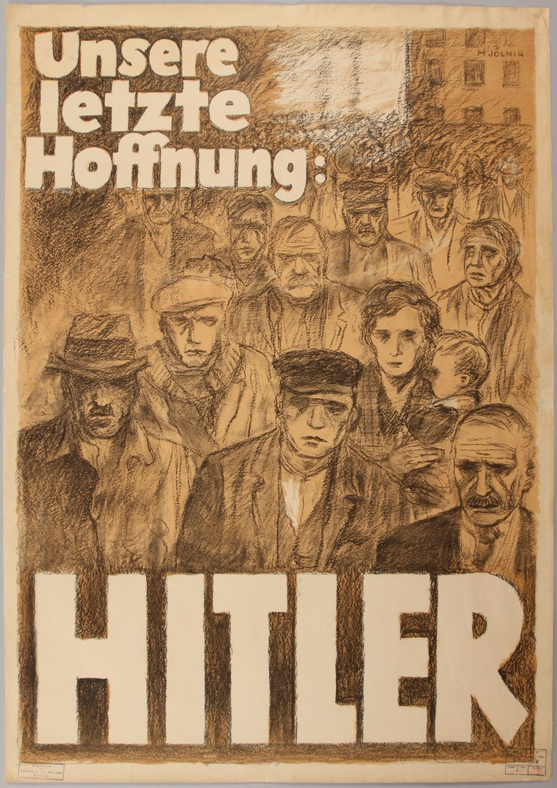
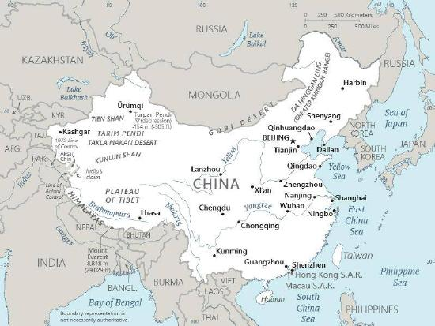
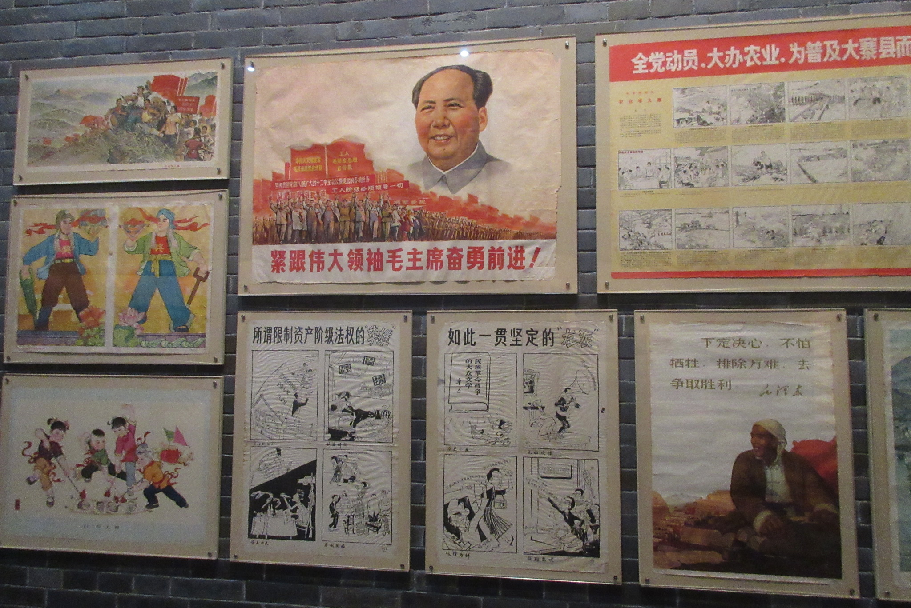

Chapter 8: Political Economy
8.1: What is Political Economy?
By the end of this section, you will be able to:
- Describe political economy as a field of study.
- Define key terms associated with political economy.
Introduction
Before turning to the theories themselves, it helps to establish a few key terms. As defined in Chapter 1, political economy is a subfield of political science that examines economic theories such as mercantilism, capitalism, socialism, and communism, along with the practices and outcomes they produce, both within individual countries and across the global system. In its simplest form, political economy is the study of the relationship between the market and powerful actors like a state’s government. The market is the exchange of goods and services within a given territory. This almost always involves the forces of supply and demand and the allocation of resources through private economic decision-making. The interaction between the state and the market, through political, economic, and social institutions, shapes outcomes such as the provision of public goods. This interaction occurs not only within countries but also between them. Public goods are goods and services provided by the state that are available for everyone in society. They are non-excludable and non-rival in nature. Examples include public roads, public hospitals, and libraries. Political economy, then, blends political and economic goals. Finally, it also studies how individuals interact with the market and society (Britannica, n.d.).
Political economy overlaps with other fields and subfields in the social sciences, most notably economics. Political economists aim to understand how the state affects the market. A good example is the concept of wealth distribution within a state. Wealth distribution is how a state’s goods, investments, properties, and resources, collectively known as wealth, are divided among its population. In some states, wealth is distributed fairly equally, while in others it is highly uneven. States with unequal wealth distribution are more susceptible to political tension, as some groups may feel that they have been denied their fair share of the pie. Political economists look not only at how the state affects the market, but also at how the market affects the state. For example, market forces can push elected politicians to change their perspectives or tactics. A downturn in the market tends to correlate with a decrease in the election chances of incumbent politicians. George H.W. Bush learned this firsthand. He led the United States to a decisive victory in the 1991 Gulf War but lost the 1992 presidential election to Bill Clinton after an economic downturn. Clinton’s campaign strategist, James Carville, famously summed up the campaign’s focus with the phrase “It’s the economy, stupid!”
In sum, political economists study how the economy affects politics and how political forces shape the economy. This chapter introduces foundational concepts and key terms and then compares political economic systems. The case studies of Germany and China examine how each country’s history, institutions, and political choices shaped its modern economy, including its reliance on exports, and how those patterns affect its economic and political stability today.
Foundations
Scholars have been thinking about the interaction between society and the economy for centuries. Ancient Greek philosophers, such as Plato and Aristotle, wrote about the oikos, the Ancient Greek word for household. Aristotle saw the oikos as the basic unit within the polis, or city-state. The English word economy derives from this root. It originally referred to managing household accounts and, over time, came to mean the study of a state’s wealth and assets.
Formal study of political economy began in the mid-1700s. Adam Smith’s 1776 work, The Wealth of Nations, is often considered the starting point, as it discusses concepts like free markets, division of labor, wealth, and trade. Building on Smith’s work, David Ricardo developed the theory of comparative advantage. Comparative advantage refers to the goods, services, or activities that one state can produce or provide more cheaply or easily than other states. Because states have different endowments of resources, such as land, labor, and capital, each state enjoys a comparative advantage in producing those goods that rely on its abundant resources. Complementing Smith’s idea of the invisible hand of the free market, Ricardo showed the mutual benefits that states can gain from specialization, cooperation, and voluntary trade. A few decades after Ricardo came the writings of Karl Marx, whose critique of the free market and capitalism still provides the basis for much contemporary criticism. Over time, the field gained wider attention, and by 1891 its growth as a university discipline was apparent. As Charles F. Dunbar (1891) states in an article in The Quarterly Journal of Economics:
It is the perception of the scope and importance of the questions with which political economy deals that turns the popular current so strongly towards it today. It is keenly felt that on the right answer of these questions must depend not only the future progress of society, but also the preservation of much that has been gained by mankind in the past.
Political economy also extends to concepts such as private goods, property, and property rights. In contrast to public goods, private goods are economic resources that are acquired or owned exclusively by a person or group. What counts as a public or private good can vary greatly between states. Healthcare, for instance, is treated as a public good in most states, but in some it is largely a private good. A defining feature of private goods is their potential scarcity and the competition that can arise from this scarcity. Property is a resource or commodity that a person or group legally owns. Property can include tangible items, like cars and houses, or intangible items, like patents, copyrights, or trademarks. Property rights are the legal authority to dictate how property, whether tangible or intangible, is used or managed. These concepts help form the foundation for many studies in political economy.
Key Concepts in Political Economy
States can affect the market through a variety of measures. First, they can pass laws that regulate the market. Regulations are rules imposed by a government on society. Various types of regulations exist, including rules to protect public interests, such as environmental policy. Regulation that affects the market is often referred to as regulatory policy, economic regulation, or fiscal regulation. Taxation is one effective form of such regulation. Taxation is the process of a government collecting money from its citizens, corporations, and other entities. A state can impose taxes on income, capital gains, and estates. Taxes are an important part of a functioning society, as governments use tax revenue to pay for public goods. A state can also use taxes to regulate economic activity. By imposing higher taxes on a product, a state drives up its price and discourages people from using it. Cigarette taxes are a good example. These are often called sin taxes, which are levied on products or activities that the state deems harmful to society. In the United States, almost every state imposes sin taxes on tobacco, alcohol, and gambling. Taken together, taxation, spending, and regulation are referred to as fiscal policy.
In addition to fiscal policy, governments also exercise monetary policy. Monetary policy includes all actions taken by a state’s central bank to affect the money supply. Money serves as a medium of exchange, a store of value, and a unit of account in economic transactions. Printed money has no intrinsic value. Its value is influenced by the policies of the government that issues it, but it ultimately depends on demand for the currency and on public confidence that it will hold its worth. When European states adopted the euro as their common currency beginning in 1999, for example, their former currencies, including the German mark, the French franc, and the Greek drachma, lost their value as money and could no longer be used in economic transactions.
A central bank can choose to expand the money supply in an effort to grow the economy and maximize employment. Economic growth is the process by which a state’s wealth increases over time. A central bank can also choose to contract the money supply in an attempt to slow the economy and moderate inflation. The resulting slowdown can sometimes turn into a recession. A recession is two consecutive quarters of declining economic activity. Whether expanding or contracting the money supply, a central bank typically does so by changing interest rates. The interest rate is the percentage of a loan amount charged by a lender. When a central bank reduces interest rates, it hopes to stimulate economic growth. Lower interest rates make it easier for businesses to borrow money to expand production, increase hiring, or invest in research and development. Similarly, lower interest rates allow consumers to borrow money more easily to buy homes or other goods. If economic demand is growing too fast, however, a central bank can raise interest rates to cool off the economy. The higher interest rate aims to reduce spending and, in turn, to control inflation. Inflation is a general increase in prices, usually within a given period of time. Inflation may occur for numerous reasons, including higher consumer demand for products and services, higher labor costs, or increased costs of inputs (such as fuel).
Beyond domestic actions by a central bank, international trade can also affect a state’s economy. International trade is the exchange of goods, services, and activities between states. International trade generally falls within the specialization of international political economy (IPE). IPE, a specialization within the subfield of international relations, is the study of political economy from a global perspective that focuses on topics like trade, finance, and international financial and monetary institutions. Because this textbook focuses on comparative politics, the discussion shifts instead to the specialization of comparative political economy (CPE). CPE is the comparison across and between countries of the ways in which politics and economics interact. Such comparisons often show that similar economic policies can produce different political outcomes, or that similar political policies can produce different economic outcomes. CPE generally focuses on the politics of economic development, the domestic effects and implications of globalization, general economic and social policies across states, and the analysis of different political economic systems. The next section takes a closer look at the final topic: political economic systems.
8.2: Political Economic Systems
By the end of this section, you will be able to:
- Define and discuss the significance of political economic systems.
- Compare and contrast four political economic systems.
Introduction
A political economic system describes the relationship between political and economic institutions within a given state. A major variable determining this system is the role the state plays in its economy. To what extent does a government intervene in the economy, and to what extent does it let the market run free?
At one extreme, a government can take a laissez-faire (let it be) approach. A laissez-faire approach is one in which the government chooses not to interfere in its economy (or to interfere only minimally), relying instead on free market forces. At the other extreme, a government can take near complete control of its economy. A command-and-control approach to the economy is one in which the government owns most, if not all, of the means of production. Rather than relying on the free market, the state (or an agent representing the state, such as a political party) makes all economic decisions.
Almost all contemporary political economic systems fall somewhere between these two extremes, and they tend to cluster at particular points along a continuum that runs from no state involvement to full state involvement in the economy. For example, states that inherited their political economic traditions from Britain, such as Australia, New Zealand, South Africa, and the United States, tend toward less government involvement. Many states in Latin America and Europe tend toward more government involvement in the form of higher taxes and more regulation. In some countries, the state plays a more direct role in the economy, a model often called state-led capitalism. In China, Singapore, and Vietnam, for example, the state owns major companies in key industries and directs investment toward sectors it considers strategically important, while still allowing private businesses and markets to operate.
Before turning to specific systems, it is important to distinguish between a political economic system and the policies used within it. A political economic system is the overall way a society organizes economic activity, including the role the state plays in the economy. Policies such as taxation, regulation, and protectionism, by contrast, are tools that many different systems can use. The same policy may therefore appear in very different systems, but it often serves different goals depending on each system’s underlying priorities. Protectionism is a good example. In a mercantilist system, tariffs may be used to build national wealth and strengthen state power. In a socialist system, similar measures may be used to shield state-run industries from foreign competition and keep the economy under the state’s control. With this distinction in mind, the following sections examine four major political economic systems: capitalism, mercantilism, social democracy, and socialism, including communism.
Mercantilism
The oldest political economic system is mercantilism. Mercantilism is a political economic system that seeks to maximize a state’s wealth through increasing exports and limiting imports. Mercantilism was most prevalent between the 16th and 18th centuries. Its hallmarks during this period included the complete control of production and trade by state-led companies, high inflation, and high taxes. Mercantilism also fueled the expansion of the slave trade, as enslaved labor was seen as essential to an empire’s economic well-being and power.
A good example of mercantilism is the British Empire. To promote imperial economic growth, Britain strongly discouraged its colonies from importing foreign products that competed with British goods. This was often accomplished through taxation, as imperial authorities imposed tariffs on sugar and molasses imported from rival empires’ colonies to protect Britain’s own monopoly on sugar from the West Indies. The British also adopted trade policies designed to give them a favorable balance of trade, again to maximize power through wealth creation. Because other empires pursued similar policies, this competition often led to open military conflict, as the Dutch, Spanish, and Portuguese Empires sought to promote their own economic interests and protect their colonial markets from British encroachment.
In theory, mercantilism created a strong relationship between the British Empire and its colonies. The empire protected the colonies from the threat of foreign nations, and money from the colonies fueled the imperial engine. In practice, however, mercantilism created friction with the colonies, especially in the Americas, where goods imported from Britain cost substantially more than those from other regions.
Although mercantilism is the oldest of the four types of political economic systems, it is not a relic of the past. Today, mercantilist policies are usually referred to as economic nationalism, and their main goal is national independence. By using protectionist policies like tariffs (taxes on imports) and quotas (limits on foreign goods), a state can aim to reduce its dependence on rival countries for key resources. Economic nationalism is an attempt by a state to protect or bolster its economy for nationalist goals. Economic nationalists tend to favor protectionism. Protectionism is a set of policies aimed at protecting a state’s domestic industry, such as tariffs, quotas, or non-tariff regulatory barriers, which include tax breaks or government subsidies for specific domestic industries. Tariffs are taxes imposed on imported foreign products with the purpose of making those products more expensive and, thus, making the domestically produced products more competitive. Quotas are limits on the number of foreign goods coming into a state. The idea is to ensure that domestic companies have a guaranteed share of the market for certain products.
As these examples of protectionist policies demonstrate, economic nationalists do not want the state to be dependent on other states for key resources. They prefer policies that diversify domestic production. This approach is easier to justify in key sectors such as agriculture than for consumer products bought with disposable income. For economic nationalists, some degree of free trade is acceptable if it furthers the goal of strengthening the power of the state. The common feature of political platforms espousing economic nationalism is a combination of “conservative economic proposals with nationalist stances on international trade and cooperation, as well as on immigration” (Colantone and Stanig, 2019). This logic is especially visible in industries tied to national security. In 2018, for example, the United States imposed tariffs on imported steel and aluminum under Section 232 of the Trade Expansion Act, arguing that a strong domestic steel industry was essential for producing military equipment and protecting critical infrastructure. Similarly, shortages of masks, drugs, and other medical supplies during the COVID-19 pandemic led many governments to push for bringing pharmaceutical production back home, on the grounds that depending on foreign suppliers for essential medicines left the country vulnerable in a crisis.
Capitalism
A competing approach to mercantilism is capitalism. Capitalism, also referred to as free market capitalism, is a political economic system in which individuals and private entities can own the land and capital needed to produce goods and services. Prices are set freely by the forces of supply and demand, ideally with little or no interference from the state. In its purest form, capitalism is laissez-faire. While capitalism is highly efficient at generating wealth, it can also lead to serious problems, most notably inequality. Because capitalism rewards capital ownership, wealth naturally tends to concentrate. Without state intervention, this can lead to extreme income gaps and market failures where the private sector fails to provide essential public goods.
Capitalism centers on self-interest, competition, private property, and a limited role for government in the market. In economics, self-interest refers to individuals acting on their own behalf to make choices that benefit themselves. Within capitalism, the self-interest of uncoordinated individuals is thought to produce better outcomes for society at large. As Adam Smith observed in The Wealth of Nations (1776), “It is not from the benevolence of the butcher, the brewer, or the baker, that we expect our dinner, but from their regard to their own interest.” Although each producer is motivated by profit, they meet the needs of others by serving customers well. Smith argued that this process encourages specialization and the division of labor, as people focus on what they do best and trade for the rest, which raises productivity and lowers prices. Competition occurs when firms and individuals vie with one another for customers, which pushes them to offer goods and services at the lowest prices. When competition and consumer self-interest are allowed to operate freely, market outcomes are thought to improve for everyone involved.
Today, capitalist states are often described as economically liberal. Economic liberalism relies on a set of policies to promote free market capitalism, namely through deregulation, privatization, and liberalization. Deregulation involves the removal of government power in a particular industry or economic area. One example is former U.S. President Ronald Reagan’s decision to deregulate the phone industry, over which AT&T had monopolistic control, to create competition, provide more choices, and lower prices for consumers. Privatization is the selling of government-owned assets. An example is the sale of a state-owned airport or harbor to a private company. Greece was required to sell such assets as a condition of its 2012 bailout. Liberalization is the loosening of government controls (allowing for more free market-oriented policies).
8.3: Comparative Case Study — Germany and China
By the end of this section, you will be able to:
- Define and discuss the significance of political economic systems.
- Compare and contrast four political economic systems.
Introduction
From a political perspective, China and Germany have little in common. China is a socialist republic led by a single, communist political party and communist elites, while Germany is a democratic, federal parliamentary republic where two main political parties vie for dominance. China’s political system is authoritarian. National political leaders are selected without nomination or election by the people, most political opposition is suppressed, and the state controls most of the media, news, and information available to the public. Germany’s political system, by contrast, enables citizens to participate in politics and allows for the representation of opposing views, a free media, and the protection of civil liberties.
China and Germany also operate under very different economic models. China’s economy is a market-oriented, mixed economy where most economic ventures are state-owned and dominated by the political interests of the single communist political party. Although not the direct opposite of China’s controlled market economy, Germany’s economy differs in a number of respects. Germany has a social market economy that draws on capitalism, particularly free market competition, while protecting its citizens from the harms of unbridled competition. The main difference between the economic systems in China and Germany is the extent to which the government intervenes in the control and management of the market system. In short, the Chinese government dominates the market, mostly through state-owned enterprises, whereas the German government prefers to influence the market, mostly through regulation.
Although China and Germany differ in terms of their political and economic systems, they share some striking similarities in their approaches to global trade. Both are centers of regional trading blocs, and both rely on their regional partnerships. Both also depend heavily on exports, with Germany’s exports accounting for over 50 percent of its gross domestic product (GDP) and China’s exports accounting for almost 25 percent of its GDP. (For reference, exports from the United States amount to less than 15 percent of US GDP.)
This heavy reliance on exports leads both China and Germany to face similar economic challenges and vulnerabilities, namely that each state produces more than its domestic market can absorb. If German exports were to unexpectedly decline, domestic consumption would need to increase to levels not feasible with Germany’s current population. If Chinese exports were to unexpectedly decline, a large segment of the population would be unable to buy domestic goods due to a lack of purchasing power. As a result, two very different political economic systems face the same problem: managing their export economies carefully to ensure domestic economic and political stability.
The following case study will compare the historical trajectories of political economic systems in Germany and China. As discussed in Chapter 2, this is a Most Different Systems Design, an approach that examines cases that are quite different from one another yet have the same outcome. Here, the political economic systems differ, yet the cases face similar economic challenges stemming from those systems.
Germany

- Full Country Name: Federal Republic of Germany
- Head(s) of State: President and Chancellor
- Government: Federal Parliamentary Republic
- Official Languages: German
- Economic System: Social Market Economy
- Location: Central Europe
- Capital: Berlin
- Total land size: 137,847 sq. miles
- Population: 84 million (2025)
- GDP: $4.66 trillion (2024)
- GDP per capita: $62,800 (2025)
- Currency: Euro
Measured by GDP, Germany is one of the largest economies in the world. It is also one of the largest global exporters. Germany has a highly developed political economic system that utilizes a social market economy, combining principles of capitalism with domestic social welfare considerations. It relies on the capitalist principles of fair competition and competitive advantage. Fair competition holds that firms will work to maximize output and minimize costs in order to compete with one another, which gives consumers competitive options. While Germany’s economy hinges on fair competition and competitive advantage, it does so with an eye toward mitigating the potential negative effects of capitalism on social welfare. To understand Germany’s economy today, it is useful to look at the roots of its social market economy.
Germany’s social market economy grew out of the dire economic conditions of the first half of the 20th century. After its defeat in World War I, Germany became a fragile democracy known as the Weimar Republic. The Treaty of Versailles, signed in 1919, formally ended the war and imposed harsh terms: Germany had to drastically reduce its military, give up some of its territory, accept full responsibility for the war, and pay heavy reparations to the Allies.


The main challenge facing the Weimar Republic was hyperinflation. Hyperinflation is a severe form of inflation (often defined as rates exceeding 50 percent per month) that can have deleterious effects on all aspects of a state’s social, political, and economic situation.
In 1921, the Allies set Germany’s reparations at 132 billion gold marks, or roughly $33 billion at the time. Struggling to make these payments, the Weimar government turned to printing more money. This triggered hyperinflation, with monthly inflation rates soaring beyond 20,000 percent and prices doubling every 3.7 days. Hyperinflation meant citizens could not buy basic goods, and many Germans went hungry. When Germany fell behind on its reparation payments, France and Belgium occupied the Ruhr Valley in 1923, seizing coal and industrial output as payment. The German economy collapsed, and the government introduced a new currency, the Rentenmark, in late 1923, followed by the Reichsmark in 1924. The new currency stabilized the economy but did not resolve all of Germany’s economic and social woes.
At the height of the 1923 crisis, Adolf Hitler gained notoriety as the leader of the far-right National Socialist German Workers’ Party (NSDAP), also known as the Nazi Party. In November 1923, Hitler led a failed attempt to overthrow the Weimar Republic, a coup attempt known as the Beer Hall Putsch. Hyperinflation, unemployment, and poor working conditions were among the factors that drew supporters to Hitler and the Nazi Party.
Over the coming decade, Hitler rallied the German people by lambasting the Treaty of Versailles, calling it a disgrace to the German nation. He promoted German pride and ultranationalism, promising to unite all the German people inside and outside of Germany. He blamed many of Germany’s problems on minority groups, particularly Germany’s Jewish population, and on communists. In the July 1932 elections, the Nazis became the largest party in the German parliament (the Reichstag), and in January 1933, President Paul von Hindenburg appointed Hitler Chancellor of Germany. Hitler then exploited manufactured hatred of Jews, communists, and the architects of the Treaty of Versailles to transform Germany into a one-party dictatorship with a state-controlled economy.

Economically, Nazi rule initially produced strong results. Under a state-directed economy built largely around rearmament, Germany experienced six years of rapid growth. This mercantilist approach served Germany’s military objectives.
After its surrender in 1945, however, Germany lay in ruins. The moment became known as Stunde Null, or Zero Hour, the point from which the country would have to rebuild itself to survive. Post-war German economists advocated for radical change, moving from a state-controlled approach toward one embracing greater free-market capitalist principles. At the same time, the German government wanted to ensure that the people’s welfare, particularly the welfare of workers, was protected. Transitioning to a fully capitalist model was seen as too risky because leaders believed that not all workers would be able to compete effectively. This led to the adoption of a social market economy. These post-war priorities for reconstruction, economic stability, and social protection encouraged Germany to rebuild its industrial base with an emphasis on efficiency, competitiveness, and integration into international markets. Over time, this orientation contributed to Germany’s development as an export-driven economy, particularly in manufacturing sectors where it could maintain a comparative advantage.
China

- Full Country Name: People’s Republic of China
- Head(s) of State: President
- Government: Communist Party-Led State
- Official Languages: Standard Chinese
- Economic System: Market-Oriented, Mixed Economy
- Location: Asia
- Capital: Beijing
- Total land size: 5,963,274.47 sq. miles
- Population: 1.4 billion (2025)
- GDP: 17.744 trillion (2024)
- GDP per capita: $23,800 (2025)
- Currency: Renminbi
Measured by GDP, China has the second largest economy in the world, and it is the world’s largest exporter and trading nation. Measured by purchasing power parity (PPP), however, China has the world’s largest economy. PPP is a metric used to compare the prices of goods and services to gauge the absolute purchasing power of a currency. China pursues a version of state capitalism, in which the state intervenes heavily in a market economy, usually through state-owned enterprises. Over 60 percent of China’s industries and enterprises are state-owned. This high level of state intervention stems partly from China’s political system, a non-democratic regime under the sole leadership of a single political party, the Chinese Communist Party. To understand China’s economy today, it is useful to look at the roots of its market-oriented, mixed economy.
China’s Communist Party came to power in 1949 after defeating the Nationalists in a brutal civil war. The new leadership aimed to modernize China as quickly as possible and make it a stronger power. From 1949 to 1952, the government prioritized repairing the transportation, communications, and power systems, as well as the military installations and equipment, that had been destroyed during the war. Under government direction, the banking system was centralized under the People’s Bank of China. As China moved toward a state-controlled economy, the state took control of a growing number of industries. By the end of 1952, only 17 percent of industries were not state-owned.
After stabilizing the economy, China prioritized industrialization, and government officials looked to the Soviet model. By the end of 1956, all firms were state-owned. In 1958, Mao Zedong, Chairman of the Chinese Communist Party, determined that the Soviet model was not working for China. Instead, Mao introduced the Great Leap Forward, a plan to increase production in all sectors of the economy simultaneously. As part of this initiative, the government organized farmers and workers into large communes, often with 20,000 to 40,000 members, that pooled their resources to raise agricultural output. At the same time, the industrial sector was pushed to increase its output as well. The economic results of the Great Leap Forward were disastrous for China. The first year brought strong results in both agriculture and industry, but the following years were much worse. Due to bad weather conditions, poor allocation of resources, and poorly constructed equipment, agricultural output plummeted from 1959 to 1961. Poor water management also contributed to a widespread famine that killed tens of millions of people and caused a significant drop in birth rates.
Between 1961 and 1965, China worked to rebuild its economy. It overhauled its agricultural policies, lowering taxes and providing farmers with more equipment. The government attempted to decentralize control of various industries to local governments to allow them to manage resources based on their unique needs. By 1965, economic conditions were again stable, and the Chinese government focused on seeking balanced growth across both agricultural and industrial sectors.
In 1966, Mao announced the Cultural Revolution, a sociopolitical and economic movement that sought to expel capitalists and promote the communist ideology. Attacking capitalism, Mao alleged that the bourgeoisie (those who own most of a society’s wealth and means of production) were attempting to infiltrate China to perpetuate their economic superiority. Mao encouraged young people to use violence against those he accused of perpetuating capitalist practices. The Cultural Revolution devastated China’s economy and led to many deaths. Political fighting disrupted agricultural and industrial production and put a strain on resources, labor, and equipment.

Mao died in 1976. In 1978, the Communist Party under Deng Xiaoping moved the country in a new direction. China reduced government controls, introduced market mechanisms, and broadly reformed the economy. This was not a sudden break with communism but a gradual shift toward a mixed economy designed to stimulate growth. These reforms slowly opened China to global trade, which improved economic outcomes. This success encouraged China to continue the strategy and to invest heavily in the education and training of government officials and future business leaders. China became a member of the World Trade Organization in 2001, cementing its transition from a command and control economy to a largely state capitalist society. These Deng-era economic reforms facilitated China’s integration into global supply chains by expanding access to international markets while maintaining significant state oversight of domestic industries. Government policies encouraged industrial expansion, infrastructure development, and foreign investment through mechanisms such as special economic zones, which provided incentives for export-oriented production. As a result, China’s growth strategy increasingly relied on producing goods for international markets, contributing to its role as one of the world’s leading export-oriented economies.
Conclusion
Despite having different political economic systems, the leaders of China and Germany share a similar problem today: how to handle economies that are largely export-based. Leaders in both countries must carefully balance domestic economic concerns against the needs of the global customers who buy their exports. If global demand collapses or customers switch to other trade partners, the Chinese and German economies may struggle to thrive. Reliance on exports also leaves both states vulnerable to economic conditions in the countries they trade with. If trading partners can no longer afford to buy their goods, the exporting state will suffer. As the historical cases above show, severe economic hardship can lead to political instability.
8.4: References
Acemoglu, Daron and Robinson, James (2006). Economic Origins of Dictatorship and Democracy, Cambridge: Cambridge University Press.
Aguilar, Julian. (Jan. 22, 2011). US-Mexico Trucker Dispute Takes a Step Forward. The New York Times. https://www.nytimes.com/2011/01/23/u…ttruckers.html
Alt, James and Crystal, Alec (1983). Political Economics, Berkeley: University of California Press.
Besley, T. (2007). The New Political Economy. The Economic Journal, 117(524), F570–F587.
Blyth, M. M. (1997). ‘Any More Bright Ideas?’ The Ideational Turn of Comparative Political Economy [Review of Ideas and Foreign Policy: Beliefs, Institutions and Political Change; Ideas and Institutions: Developmentalism in Argentina and Brazil, by J. Goldstein, R. Keohane, & K. Sikkink]. Comparative Politics, 29(2), 229–250.
Britannica. https://www.britannica.com/topic/political-economy
Bracking, S. (2018). Corruption & State Capture: What Can Citizens Do? Daedalus, 147(3), 169–183. https://www.jstor.org/stable/48563088
Colantone, I., & Stanig, P. (2019). The Surge of Economic Nationalism in Western Europe. The Journal of Economic Perspectives, 33(4), 128–151.
CSS World. Mercantilism. YouTube. May 29, 2020. https://www.youtube.com/watch?v=jMfdfj7XqOQ&t=68s
CSS World. Economic Liberalism. YouTube. May 30, 2020. https://www.youtube.com/watch?v=zI4WzeCB7i4
Delechat, Corinne and Medina, Leandro. (2020). What is the Informal Economy? International Monetary Fund.
https://www.imf.org/external/pubs/ft…omy-basics.htm
Dickins, A. (2006). The Evolution of International Political Economy. International Affairs (Royal Institute of International Affairs 1944-), 82(3), 479–492.
Dunbar, C. [1891] The Academic Study of Political Economy. The Quarterly Journal of Economics, July 1891, Vol. 5, No. 4, pp. 397-416. Oxford University Press.
Frieden, J. [2020] The Political Economy of Economic Policy. Finance & Development. June 2020, Vol. 57, No. 2.
https://www.imf.org/external/pubs/ft…ff-frieden.htm
Gilpin, Robert. (2001) Global political economy: understanding the international economic order (Princeton: Princeton University Press)
Gnangnon, S. K. (2018). Multilateral Trade Liberalization and Economic Growth. Journal of Economic Integration, 33(2), 1261–1301. http://www.jstor.org/stable/26431808
Grabowski, R. (1994). Import Substitution, Export Promotion, and the State in Economic Development. The Journal of Developing Areas, 28(4), 535–554.
Greenwald, Bruce C. and Stiglitz, Joseph E. (1986). ‘Externalities in markets with imperfect information and incomplete markets’ Quarterly Journal of Economics, vol. 101(2), pp. 229-64.
Heider, C. [2016] Why does Political Economy Analysis Matter? Independent Evaluation Group. World Bank.
https://ieg.worldbankgroup.org/blog/…nalysis-matter
Love, J. L. (2005). The Rise and Decline of Economic Structuralism in Latin America: New Dimensions. Latin American Research Review, 40(3), 100–125.
Missio, F. et al (2015). The structuralist tradition in economics: methodological and macroeconomics aspects. Brazilian Journal of Political Economy.
Milner, Helen (2005) ‘Globalization, development, and international institutions: normative and positive perspectives’, Perspectives on Politics 3: s, pp. 833-54
PBS. [Feb 7, 2020]. Steel Tariffs Hurt Manufacturers Downstream, Data Shows. https://www.pbs.org/newshour/economy…eam-data-shows
Persson, Torsten and Tabellini, Guido (2000). Political Economics: Explaining Economic Policy, Cambridge: MIT Press.
Persson, Torsten and Tabellini, Guido (2003). The Economic Effects of Constitutions, Cambridge: MIT Press.
Phillips, Nicola. (2004) ‘International political economy, comparative political economy and the study of contemporary development’, IPEG Papers in Global Political Economy 8.
Robbins, M. [2017] Why we need political economy. Policy Options Politiques. Institute for Research on Public Policy. https://policyoptions.irpp.org/magazines/january-2017/why-we-need-political-economy/
Roseberry, W. (1988). Political Economy. Annual Review of Anthropology, 17, 161–185.
Soederberg, Susane, Georg Menz and Philip Cerny, eds, (2005) Internalizing globalization: the rise of neoliberalism and the decline of national varieties of capitalism (Basingstoke: Palgrave Macmillan)
Strange, Strange (1970) ‘International economics and international relations: a case of mutual neglect’, International Affairs 46: 2,, pp. 304-15
UIA. The Encyclopedia of World Problems and Human Potential. http://encyclopedia.uia.org/en
US Chamber of Commerce. (2021). The Benefits of International Trade. https://www.uschamber.com/internatio…national-trade
Wolla, Scott A. and Esenther, Anna, ‘Does International Trade Create Winners and Losers?,’ Page One Economics®, November 2017 https://research.stlouisfed.org/publ…rs-and-losers/
8.5: Student Resources
Key Terms
Bourgeoisie refers to the upper middle classes, who often own most of a society’s wealth and means of production.
Capitalism, also referred to as free market capitalism, is a political economic system in which individuals and private entities are able to own land and capital needed to produce goods and services.
Command and control is an approach to the economy in which the government owns most, if not all, means of production; it does not rely on the free market, and the state instead makes all economic decisions.
Communism is where the state, usually dominated by one party, is in complete control of the political economic system, including all property.
Comparative advantage refers to the goods, services, or activities that one state can produce or provide more cheaply or easily than other states.
Comparative political economy (CPE) is the comparison across and between countries of the ways in which politics and economics interact.
Competition occurs when firms and individuals vie with one another for customers, which pushes them to offer goods and services at the lowest prices.
Deregulation involves the removal of government power in a particular industry or economic area.
Economic growth is the process by which a state’s wealth increases over time.
Economic liberalism relies on a set of policies to promote free market capitalism, namely through deregulation, privatization, and liberalization.
Economic nationalism is an attempt by a state to protect or bolster its economy for nationalist goals.
Economic structuralism describes a set of policies that aims to protect the working class from exploitation of the capital- owning class due to economic structures—domestically and internationally—such as inequality, uneven development, property rights and ownership, specialization, and trade.
Economies of scale is the ability to produce goods at a lower average cost.
Fiscal policy collectively refers to a state’s system of taxation, spending, and regulation.
Hyperinflation is a severe form of inflation (often defined as rates exceeding 50 percent per month).
Import-substitution industrialization (ISI) refers to state policies that attempt to reduce the state’s dependence on foreign companies through increased domestic production.
Inflation is a general increase in prices, usually within a given period of time.
Interest rate is the percentage of a loan amount charged by a lender.
International political economy (IPE) is the study of political economy from a global perspective that focuses on topics like trade, finance, and international financial and monetary institutions.
International trade is the exchange of goods, services, and activities between states.
Laissez-faire is an approach in which the government chooses not to interfere in its economy (or to interfere only minimally); it instead relies on free market forces.
Liberalization is the loosening of government controls (allowing for more free market-oriented policies).
Market is the exchange of goods and services within a given territory.
Marxism is a theoretical framework, developed by Karl Marx and Friedrich Engels, that critiques capitalism for producing structural inequality between classes.
Mercantilism is a political economic system that seeks to maximize a state’s wealth through increasing exports and limiting imports.
Monetary policy includes all actions taken by a state’s central bank to affect the money supply.
Non-tariff regulatory barriers are restrictions on trade not involving a tariff or a quota, such as offering tax breaks or providing government subsidies for specific domestic industries.
Political economic system describes the relationship between political and economic institutions within a given state.
Private goods are economic resources that are acquired or owned exclusively by a person or group.
Privatization is the selling of government-owned assets.
Property is a resource or commodity that a person or group legally owns.
Property rights are the legal authority to dictate how property, whether tangible or intangible, is used or managed.
Protectionism is a set of policies aimed at protecting a state’s domestic industry through subsidies, favorable tax treatment, or by imposing tariffs on foreign competitors.
Public goods are goods and services provided by the state that are available for everyone in society.
Quotas are limits on the number of foreign goods coming into a country.
Recession is two consecutive quarters of declining economic activity.
Regulations are rules imposed by a government on society.
Self-interest refers to individuals acting on their own behalf to make choices that benefit themselves.
Social democracy is a political and economic system that favors heavy market regulation to achieve a more equal society.
Socialism is where property and the means of production are collectively owned, but some individual ownership is allowed (for example, one’s house).
Tariffs are taxes imposed on imported foreign products with the purpose of making those products more expensive.
Taxation is the process of a government collecting money from its citizens, corporations, and other entities.
Wealth distribution is how a state’s goods, investments, properties, and resources—collectively known as wealth—are divided among its population.
Zero-sum game is a situation in which one person, or entity, gains at the equal cost of another.
Summary
Section 8.1: What is Political Economy?
Political economy is a subfield of political science that considers various economic theories (such as capitalism, socialism, communism, fascism), practices, and outcomes either within a country, or among and between countries in the global system. In its simplest form, political economy is the study of the relationship between the market and powerful actors like a state’s government. The foundations of political economy can be traced back to the works of Plato and Aristotle, though its modern form is usually traced to Adam Smith’s The Wealth of Nations. States can affect the market through a variety of measures, such as regulations, taxation, fiscal policy, and monetary policy.
Section 8.2: Political Economic Systems
A political economic system describes the relationship between political and economic institutions within a given state. A major variable determining this system is the role the state plays in its economy. At one extreme, a government can take a laissez-faire (let it be) approach. A laissez-faire approach is one in which the government chooses not to interfere in its economy (or to interfere only minimally); it instead relies on free market forces. At the other extreme, a government can take near complete control of its economy. A command and control approach to the economy is one in which the government owns most, if not all, means of production; it does not rely on the free market, and instead the state (or some agent representing the state, such as a political party) makes all economic decisions. Almost all contemporary political economic systems fall somewhere between these two extremes. There are four main political economic systems: mercantilism, capitalism, Marxism (socialism and communism), and social democracy.
Section 8.3: Comparative Case Study — Germany and China
Germany and China have different economic systems, but both play prominent roles in the global community as major exporters. When countries are large exporters, they can experience similar problems despite their very different economic systems. Political leaders in both countries must carefully balance domestic economic concerns against the needs of the global customers who buy their exports. If global demand collapses or customers switch to other trade partners, the Chinese and German economies may struggle to thrive. Reliance on exports also leaves states vulnerable to economic conditions in the countries they trade with. If trading partners can no longer afford to buy their goods, the exporting state will suffer.
Review Questions
- What is the field of political economy concerned with?
- international organizations like the World Bank and the International Monetary Fund
- the relationship between political and economic policies
- international monetary policies and domestic fiscal policies
- comparative advantage and the balance of trade
- Which theory in this chapter credits capitalism, globalization, and international trade with contributing to poverty in developing countries?
- economic liberalism
- economic realism
- economic nationalism
- economic structuralism
- Which option below best describes the concept of comparative advantage?
- countries compete by trying to produce all items and products within their own country, working to decrease reliance on imports
- countries compete by trying to outsource all production, working to increase reliance on imports
- countries cooperate economically, encouraging countries to produce what they are most efficiently and cheaply able to produce relative to other countries
- none of the above
- Which theory described in this chapter argues that once economic inequalities are apparent, they have a tendency to become self-perpetuating?
- feminism
- economic liberalism
- mercantilism
- economic structuralism
- What is autarky?
- a situation where countries trade freely with each other
- a situation where a country does not trade with other countries
- a situation where a country is only able to trade with a few countries
- a situation where countries work to destabilize other economies
Answers: 1.b, 2.d, 3.c, 4.d, 5.b
Critical Thinking Questions
What contributed to the rise of political economy as a field of academic study? Describe the factors involved and discuss implications for future research and study.
What lessons can be learned from the responses to the COVID-19 pandemic about the importance of political economy?
There are a number of different belief systems about the appropriate role of government in economic affairs. How do these beliefs manifest in practical terms? Consider the application of these different belief systems in the context of energy and environment policies.
The effects of changes in climate and the environment can impact countries in uneven and, arguably, unfair/inequitable ways. To what extent do various economic systems respond or react to these inequalities/inequities? Are some economic systems more able to handle environmental and climate shifts? If so, how?
Suggestions for Further Study
Websites
Journal Articles
- Acemoglu, D., S. Johnson, and J. Robinson. (2001). ‘The Colonial Origins of Comparative Development: An Empirical Investigation’ American Economic Review, 91, 1369-1401.
- Rodrik, D. (1997). ‘Sense and Nonsense in the Globalization Debate.’ Foreign Policy 107: 19-37.
- Valenzuela, J.S. and A. Valenzuela. (1978). ‘Modernization and Dependency: Alternative Perspectives in the Study of Latin American Underdevelopment.’ Comparative Politics 10:4 (July), pp. 535-557.
Books
- Piketty, T. (2017). Capital in the Twenty-First Century. The Belknap Press of Harvard University Press.
- Spero, J. E. (1990). The Politics of International Economic Relations. St. Martin’s Press, Inc.
- Stilwell, F. (2011). Political Economy, the Contest of Economic Ideas. Oxford University Press; 3rd Edition.
Social Democracy
Social democracy is a system that favors heavy market regulation to achieve a more equal society. This approach argues that capitalism can lead to a highly uneven distribution of wealth, which is viewed as inconsistent with democratic principles (on the grounds that an individual is unable to have true freedom if they lack the means to survive). Its defining feature is a robust social safety net. This is a deliberate political strategy: by providing services like universal healthcare and education, the state reduces the economic despair that often fuels radical, anti-democratic movements. Another term for this is democratic socialism, an ideology that seeks democracy not just in the political sphere but also in the economic sphere.
In social democracies, governments levy high taxes on corporations and wealthy individuals and redistribute the collected funds to poorer members of society through social welfare programs. While social democracies have a capitalist system as their base, that system is overlaid with a heavy system of regulation to protect society from the potential harm that a free market capitalist system can yield. Some social democratic countries also take over the means of production in a particular industry. Norway is a good example: its main oil company is state-owned, and oil revenues help pay for social expenditures such as education and health.
Social democracy took hold in Europe, where such policies were initially put in place to blunt the ability of communist movements to rally workers to their cause. The policies proved popular with voters and became a lasting feature of social democracies. Sweden, for example, has developed a political economy in which citizens enjoy many benefits, including access to free health care, free education, and generous pensions. These benefits are paid for through higher taxes and societal expectations of corporate behavior. A state with this type of mixed economy, such as Sweden, is often described as a social market economy, meaning one that combines principles of capitalism with domestic social welfare considerations.
Social democracy has its critics. Opponents argue that high taxes can discourage work, investment, and entrepreneurship, and may push businesses and wealthy individuals to move their money or operations to countries with lower tax rates. Others question whether generous welfare programs can be sustained over the long term, especially as populations age and fewer workers support a growing number of retirees. Critics also contend that extensive government involvement in the economy can reduce efficiency and individual choice. Sweden itself offers an example: after a severe economic crisis in the early 1990s, the country reformed its pension system, cut some taxes, and opened several public services to private competition. Supporters see these reforms as proof that the model can adapt, while critics see them as evidence of its limits.